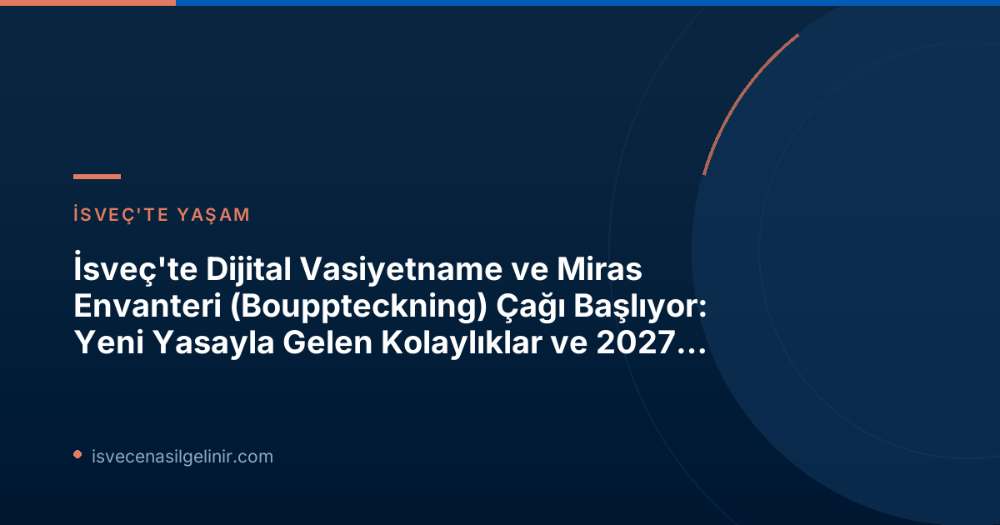

Yeni Yasanın Getirdikleri: Dijitalleşme Sürecinde İlk Adım
Daha önce kağıt tabanlı ve zaman zaman karmaşık olabilen miras envanteri hazırlama süreci, İsveç'in modernleşme çabalarıyla önemli bir dönüşüm geçiriyor. Skatteverket, bu köklü değişimin öncüsü olarak, 2023 yılında hükümete bir yasa değişikliği teklifi sunmuştu. Bu teklif, 1 Temmuz 2026 tarihinde yürürlüğe giren yeni yasayla gerçeğe dönüştü. Yasayla birlikte Skatteverket, dijital bir çözüm geliştirmek için çalışmalara başladı. Ancak unutmayın, dijital platformun en erken 2027 yılında faaliyete geçmesi bekleniyor.
Skatteverket'ten Anders Koskinen: "Acılı Zamanlarda Kolaylık Sağlamak İstiyoruz"
Skatteverket Birim Müdürü Anders Koskinen, konuyla ilgili yaptığı açıklamada, "Miras envanteri (bouppteckning) hayatınızda belki de sadece bir kez, üstelik çoğu zaman bir kayıp yaşarken yapılan bir işlem. Bu nedenle, bu süreci mümkün olduğunca kolay hale getirmek istiyoruz ve dijital bir hizmet bunu mümkün kılacaktır," ifadelerini kullandı. Koskinen, dijital hizmetin birçok yaygın hatanın önüne geçeceğini ve işlem sürelerini kısaltacağını öngörüyor. Günümüzde birçok kişinin belgelerini sonradan tamamlamak zorunda kalması, sürecin uzamasına neden oluyor.
Mevcut Sistemde Miras Envanteri (Bouppteckning) Nasıl Yapılır?
Dijital dönüşüm yolda olsa da, şimdilik miras envanteri işlemleri hala geleneksel yöntemlerle, yani kağıt formda ve posta yoluyla yürütülüyor. Bu süreçte hata yapma riskini azaltmak ve olası gecikmelerin önüne geçmek için dikkat etmeniz gereken kritik noktalar bulunuyor.
| Önemli Bilgi | Detaylar |
|---|---|
| Tanım | Bir vefat edenin mal varlığı ve borçlarının yazılı bir özeti olup, mirasçıları da gösterir. |
| Son Teslim Süresi | Vefat tarihinden itibaren dört ay içinde gönderilmelidir. |
| Mevcut Gönderim Şekli | Orijinal belge, imzalı olarak ve posta yoluyla gönderilmelidir. |
| Dijitalleşme Hedefi | En erken 2027 yılında dijital bir çözümün kullanıma sunulması hedefleniyor. |
Gecikmeleri Önlemek İçin Skatteverket'in Kontrol Listesi
Skatteverket, belgelerinizi göndermeden önce dikkat etmeniz gereken bazı önemli noktaları hatırlatıyor. Bu adımları titizlikle takip etmek, ek belge taleplerini ve işlem sürelerinin uzamasını engelleyecektir:
- Tüm mirasçılar için gerekli tüm bilgilerin eksiksiz olduğundan emin olun.
- Emlak sahibinin veya ikincil mirasçının doğru bir şekilde işaretlendiğini kontrol edin.
- Vefat edenin mal varlığı ve borçlarının (örneğin taşınmaz mal bilgileri) eksiksiz ve doğru bir şekilde değerlendirildiğinden emin olun.
- Hayatta kalan eşin/partnerin mal varlığı ve borçlarının (örneğin taşınmaz mal bilgileri) eksiksiz ve doğru bir şekilde değerlendirildiğinden emin olun.
- Toplantıya katılamayan varsa, katılım belgesini ekleyin.
- Vasiyetnamenin onaylı bir kopyasını ekleyin.
- Belgelerinizi orijinal, imzalı ve posta yoluyla gönderdiğinizden emin olun.
Daha fazla bilgi ve güncel kontrol listesi için Skatteverket'in resmi web sitesini ziyaret edebilirsiniz. Ayrıca İsveç’teki göçmenlik süreçleri ve İsveç Vatandaşlık Testi hakkında kapsamlı bilgiler için sverigemedborgarskapsprov.com adresini inceleyebilirsiniz.
Gelecekte Bizi Neler Bekliyor?
Dijitalleşme hamlesi, İsveç'in bürokratik süreçlerini daha modern, hızlı ve kullanıcı dostu hale getirme yolunda kararlılığını gösteriyor. 2027'de devreye girmesi beklenen dijital bouppteckning hizmeti, vatandaşlar için büyük bir kolaylık sağlayacak ve Skatteverket'in hizmet kalitesini artıracaktır. Bu süreçle ilgili güncel gelişmeleri takip etmek, hem zaman hem de emek açısından fayda sağlayacaktır.
Referanslar
İsveç Göçmenlik ve Vatandaşlık Süreçlerinde Destek mi Arıyorsunuz?
İsveç'e yerleşme, çalışma veya vatandaşlık başvurusu süreçlerinde karşılaşabileceğiniz karmaşık prosedürlerde uzman danışmanlık hizmetlerimizle yanınızdayız. Yeni gelişmeleri ve yasal düzenlemeleri kaçırmadan, doğru adımlarla ilerleyin.